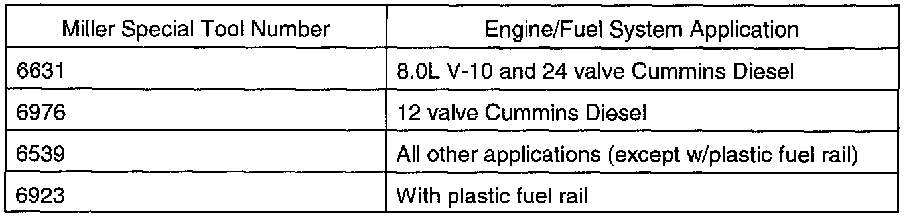

Fuel Pressure Gauge Adapter - Usage
NO: 14-03-98GROUP: Fuel
DATE: May 1, 1998
SUBJECT:
Fuel Pressure Gauge
Adapter Usage
MODELS:
1996 - 1998 (AB) Ram Van
1996 - 1998 (AN) Dakota
1996 - 1998 (BR/BE) Ram Truck
1998 (DN) Durango
1996 - 1998 (XJ) Cherokee
1996 - 1998 (ZJ) Grand Cherokee
1996 - 1998 (ZG) Grand Cherokee (International Markets)
DISCUSSION:

Currently, four different fuel pressure adapters are required, depending on application, to attach a fuel gauge for pressure testing. The matrix lists the adapter part numbers and their application.
POLICY: Information Only